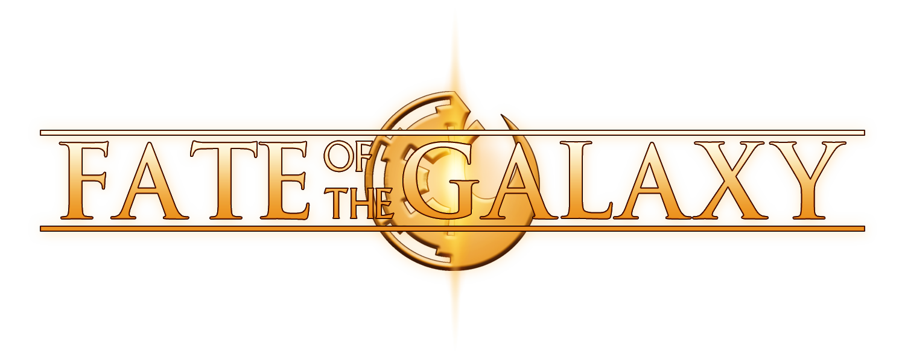

Fate of the Galaxy is a free total conversion set in the Star Wars Original Trilogy. Our goal is to deliver starfighter combat that captures the look and feel of the movies.
Play your way with engaging combat and campaigns, custom settings, mission creation tools, and more. Check out the Game Features section for more detail.
This total conversion is developed by a volunteer team using FreeSpace Open and is freely available for PC, Linux, and Mac.
Choose to play as a pilot for the Rebel Alliance, the Galactic Empire, or as an independent adventurer/privateer. Play interconnected story campaigns, customizable dynamic campaigns that span across the galaxy, arcade and training scenarios, single stand-alone-missions, and even quick LAN multiplayer matches.
Tune to your own style with multiple customization and difficulty settings. Playing with multiple joysticks? The game supports using up to four separate devices for controls. Playing with just a mouse and keyboard? Use the in-game toggle to allow your mouse to make wide sweeping turns in maneuver-mode then switch back to aiming-mode to land precise shots. These are just two examples of the many other customizable options available to players.
Fate of the Galaxy includes with a feature-rich, open-source mission editor and a guide for getting started. With this tool you can create your own custom missions with full creative control. The resulting mission files are also easy to share with others in the community.
Visuals are tuned to the Original Trilogy aesthetic and have been highly optimized to support large battles that run smoothly on a range of machines across PC, Linux, and Mac. Even players that do not have a dedicated graphics card can still play the game smoothly if they adjust a few graphics options. At the other end of the spectrum, FotG fully supports playing in VR if you own a headset!
We support a friendly community with close ties with other volunteer mod projects. Come hang out on our Discord channel or check out the mod details on our wiki and newsletters on our forum.
Fate of the Galaxy uses the FSO engine, an open-source space combat game engine that many other volunteer game projects use. These include games based on FreeSpace, Battlestar Galactica, Star Fox, Wing Commander, and even entirely novel galaxies such as Solaris. These and many others are all available for free at Hard-Light Productions.
Fate of the Galaxy is now available! Want to play? Just follow the quickstart instructions below.
Download the FotG Launcher ZIP file for PC, Linux, or Mac from ModDB.
Once downloaded, extract the ZIP file to the folder of your choice. For example, in Windows you right click on the zip file and click Extract.
Once the zip is done extracting, open the new folder and run KnossosNET**!
Be sure to check out the Game Manual for additional details, guides, combat tips, and more!
**Note, Windows/PC antivirus programs may sometimes flag KnossosNET as insecure, but it is perfectly safe! Registering as a Windows App is financially impractical for the KnossosNET team, but you can check out the open-source GitHub repository if it helps put your mind at ease.
Fate of the Galaxy is a total conversion for FreeSpace Open developed by a team of fan volunteers, it is not associated with Lucasfilm Ltd or Disney and is not an official Star Wars product.